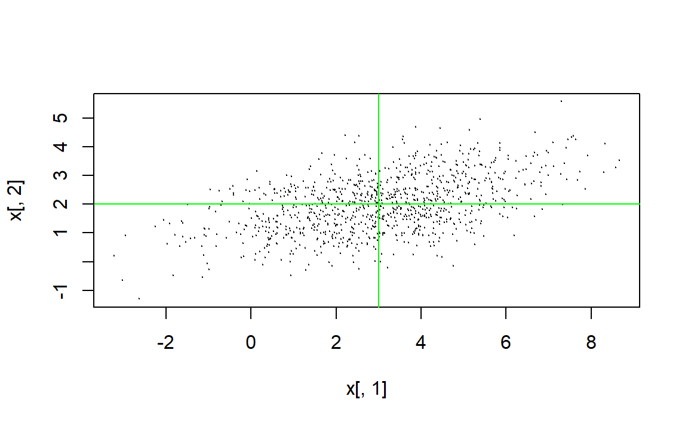

6 随机向量和随机过程的随机数
6.1 笔记
将书上的一些函数例子自己重新实现一遍。
6.1.1 多项分布随机数
利用条件分布的方法：
# 输入
# n: 输出随机数个数
# m: 独立试验次数
# prob: 每次使用出现结果概率
# 输出
# n行r列，r为每次试验可能出现的结果个数
rng.multinom <- function(n, m, prob)
{
r <- length(prob)
pp <- cumsum(prob[-r]) # 预先计算二项分布各p值
pp <- prob[-1]/(1-pp)
res <- matrix(0,n,r) # 输出结果
mr <- m
# 按列循环
for(j in seq(r))
{
if(j==1) res[,1] <- rbinom(n,m,prob[[1]])
else{
mr <- mr-res[,j-1]
res[,j] <- rbinom(n,mr,pp[j-1])
}
}
res
} 测试：
prob <- c(0.1, 0.3, 0.6)
x <- rng.multinom(100000, 5, prob)
# (1,2,2)的理论概率：
p122 <- 30*prod(prob^c(1,2,2)); p122
#> [1] 0.0972
# 模拟结果
mean(x[,1]==1 & x[,2]==2 & x[,3]==2)
#> [1] 0.09752
# (1,1,3)的理论概率：
p113 <- 20*prod(prob^c(1,1,3)); p113
#> [1] 0.1296
# 模拟结果
mean(x[,1]==1 & x[,2]==1 & x[,3]==3)
#> [1] 0.128536.1.2 多元正态分布模拟
利用对协方差矩阵的Cholesky分解。
# 输入
# n: 生成随机数个数
# mu: 均值向量
# Sigma: 协方差矩阵
# 输出
# n行m列矩阵，m为维数
rng.mnorm <- function(n, mu, Sigma)
{
m <- length(mu)
M <- chol(Sigma) # Sigma = M' M
y <- matrix(rnorm(n*m),n,m)%*%M
x <- mu+t(y)
t(x)
}测试：
x <- rng.mnorm(1000, c(3,2), rbind(c(4, 1), c(1, 1)))
plot(x[,1], x[,2], type="p", cex=0.1)
abline(v=3, h=2, col="green")
var(x)
#> [,1] [,2]
#> [1,] 3.8500295 0.9318417
#> [2,] 0.9318417 0.9670824
6.2 习题
习题1
# 输入：
# n: 生成随机数个数
# ni: 各个颜色球的个数向量
# m: 总共抽取的球个数
# 输出
# n行r列矩阵，其中r为球的颜色数量
rng.hyper <- function(n,ni,m)
{
r <- length(ni)
N <- sum(ni) # 总球数
N <- N-cumsum(ni)
x <- matrix(0,n,r)
xr <- rep(0,n)
# 按列循环
for(j in seq(r))
{
if(j==1) x[,1] <- rhyper(n,ni[[1]],N[[1]],m)
else{
xr <- xr + x[,j-1]
x[,j] <- rhyper(n,ni[[j]],N[[j]],m-xr)
}
}
x
}测试：
n <- 10000
ni <- c(20,30,50)
m <- 10
x <- rng.hyper(n,ni,m)
apply(x,2,sum)/n/10
#> [1] 0.20152 0.30026 0.49822接下来采用试验计数的方法验证一下上面定义的函数：
trial.hyper <- function(n,ni,m)
{
r <- length(ni)
x <- matrix(0,n,r)
s <- rep(1:r,times = ni) # 样本数据
for(i in seq(n))
{
y <- sample(s,m,replace = FALSE) # 不放回抽样
y <- factor(y,levels=(1:r))
t <- table(y) #计数
x[i,] <- as.integer(t)
}
x
}
# 测试
n <- 10000
ni <- c(20,30,50)
m <- 10
x <- trial.hyper(n,ni,m)
apply(x,2,sum)/n/10
#> [1] 0.19965 0.29942 0.50093非常接近，定义的函数应该是可行的。